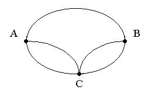
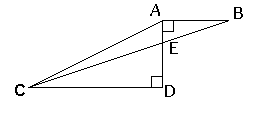
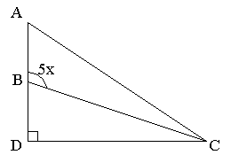
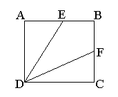
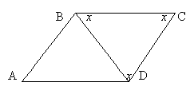
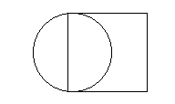
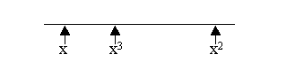
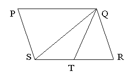

SELF-ASSESSMENT TEST
-
1. Amy has to visit towns B and C in any order. The roads connecting these towns with her home are shown on the diagram. How many different routes can she take starting from A and returning to A, going through both B and C (but not more than once through each) and not travelling any road twice on the same trip?

A. 10
B. 8
C. 6
D. 4
E. 2
-
2. In the figure above AD = 4, AB = 3 and CD = 9. What is the area of triangle AEC ?

A. 18
B. 13.5
C. 9
D. 4.5
E. 3
-
3. Which of the following could be a value of x, in the
diagram?

A. 10
B. 20
C. 40
D. 50
E. any of the above
-
4. Helpers are needed to prepare for the fete. Each
helper can make either 2 large cakes or 35 small cakes per hour. The kitchen
is available for 3 hours and 20 large cakes and 700 small cakes are needed.
How many helpers are required?
A. 10
B. 15
C. 20
D. 25
E. 30
-
5. Jo's collection contains US, Indian and British
stamps. If the ratio of US to Indian stamps is 5 to 2 and the ratio of
Indian to British stamps is 5 to 1, what is the ratio of US to British
stamps?
A. 5 : 1
B. 10 : 5
C. 15 : 2
D. 20 : 2
E. 25 : 2
-
6. A 3 by 4 rectangle is inscribed in circle. What is
the circumference of the circle?
A. 2.5π
B. 3π
C. 5π
D. 4π
E. 10π
-
7. Two sets of 4 consecutive positive integers have
exactly one integer in common. The sum of the integers in the set with
greater numbers is how much greater than the sum of the integers in the
other set?
A. 4
B. 7
C. 8
D. 12
E. it cannot be determined from the
information given.
-
8. If f(x) = (x + 2) / (x-2) for all integers except
x=2, which of the following has the greatest value?
A. f(-1)
B. f(0)
C. f(1)
D. f(3)
E. f(4)
-
9. ABCD is a square of side 3, and E and F are the mid
points of sides AB and BC respectively. What is the area of the
quadrilateral EBFD ?

A. 2.25
B. 3
C. 4
D. 4.5
E. 6
-
-
11. After being dropped a certain ball always bounces
back to 2/5 of the height of its previous bounce. After the first bounce it
reaches a height of 125 inches. How high (in inches) will it reach after its
fourth bounce?
A. 20
B. 15
C. 8
D. 5
E. 3.2
-
12. Sheila works 8 hours per day on Monday, Wednesday and
Friday, and 6 hours per day on Tuesday and Thursday. She does not work on
Saturday and Sunday. She earns $324 per week. How much does she earn in
dollars per hour?
A. 11
B. 10
C. 9
D. 8
E. 7
-
13. ABCD is a parallelogram. BD = 2. The angles of
triangle BCD are all equal. What is the perimeter of the parallelogram?

A. 12
B. 9√3
C. 9
D. 8
E. 3√3
-
14. If the product of 6 integers is negative, at most how
many of the integers can be negative?
A. 2
B. 3
C. 4
D. 5
E. 6
-
-
16. A solid cube of side 6 is first painted pink and then
cut into smaller cubes of side 2. How many of the smaller cubes have paint
on exactly 2 sides?
A. 30
B. 24
C. 12
D. 8
E. 6
-
17. Line
l contains the points (3,1) and (4,4).
If line
m is a different line, parallel to line
l in the
same coordinate plane, which of the following could be the equation of line
m?
A. y = 3x - 8
B. y = 1/3x - 3
C. y = -3x - 8
D. y = 3x + 1
E. y = -8x + 3
-
18. In the figure above the square has two sides which
are tangent to the circle. If the area of the circle is 4a²π, what is the
area of the square?

A. 2a²
B. 4a
C. 4a²
D. 16a²
E. 64a²
-
19. A triangle has a perimeter 13. The two shorter sides
have integer lengths equal to x and x + 1. Which of the following could be
the length of the other side?
A. 2
B. 4
C. 6
D. 8
E. 10
-
20. A machine puts c caps on bottles in m minutes. How
many hours will it take to put caps on b bottles?
A. 60bm/c
B. bm/60c
C. bc/60m
D. 60b/cm
E. b/60cm
-
21. Paint needs to be thinned to a ratio of 2 parts
paint to 1.5 parts water. The painter has by mistake added water so that he
has 6 litres of paint which is half water and half paint. What must he add
to make the proportions of the mixture correct?
A. 1 litre paint
B. 1 litre water
C. ½ litre water and one litre paint
D. ½ litre paint and one litre water
E. ½ litre paint
-
22. Which of the following can be used to illustrate that not all prime numbers are odd?
A. 1
B. 2
C. 3
D. 4
E. 5
-
23. Considering the positions on the number line above, which of the following could be a value for x?

A. 5/3
B. 3/5
C. -2/5
D. -5/2
E. none
-
24. PQRS is a parallelogram and ST = TR. What is the ratio of the area of triangle QST to the area of the parallelogram?

A. 1 : 2
B. 1 : 3
C. 1 : 4
D. 1 : 5
E. it cannot be determined